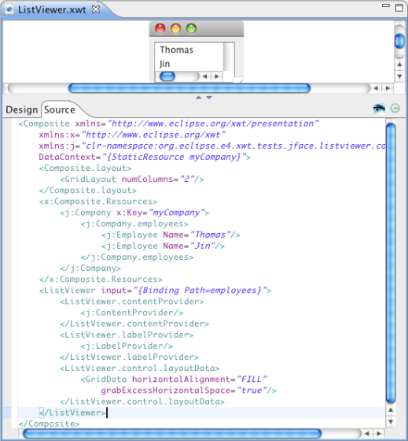
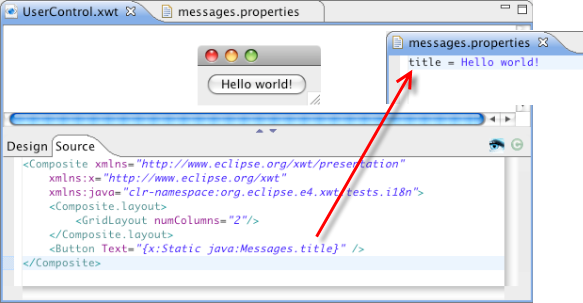

XWT comes to e4
The XWT declarative widget framework has been added to the e4 incubator. XWT allows you to specify UI components declaratively, thus separating the design and structure of your UI from specific implementation details. Repetitive boilerplate SWT code is generated automatically from the xml-based UI declaration, thus reducing development cost, improving UI consistency, and opening the door to skinning or otherwise customized rendering of an application.
XWT supports all standard SWT layouts such as FillLayout, FormLayout, GridLayout, RowLayout, StackLayout. It also handles all SWT events and an additional loaded event. The loaded event occurs when the resource file is loaded, and is used by the control class for the purpose of initialization. A convenience method InitializeComponent can be used in your control class for the same purpose.
Dynamic event handling
The association between UI widgets and your control class is setup automatically during UI loading. In the following example, the event SelectionEvent is handled by the method selection of ButtonHandler.
Here is the class implements the event handler.
When click the button, the content be changed to "OK".
Support for JFaces viewers
XWT supports JFace ListViewer and TableViewer. The following Viewer binds to a Company object. The "input" data must be an array or a collection.
Here is an example using ListViewer.

Below is a TableViewer example with the definition of two table columns.
custom widget support
XWT supports directly integrating user-defined SWT widgets in your declarative UI. In the following example, a customized UserControl widget contains a button that responds to a selection event.

Now we can integrate the custom control directly into a new XWT component:

Here is the result.
Specifying and customizing style
All controls in XWT can have an additional style property. This property specifies a style object that defines widget properties such as fonts, colors and images.
In the following example, we define a style with a background color of red, and apply it to a label control:
You can also define a style for a specific widget type. It is applied to all UI elements of this type under a given UI tree structure.
In the following example, the MyUserControl component consists of a Label with text "Hello, world". We embed it into a customized component and declare a style to be applied to components of that type.
In addition to embedded XML-based style, XWT provides a customizable styling mechanism. Styling can be applied at several levels:
- Application
- Resource view
- UI element
Integration with e4 CSS is already provided as one of the standard styling solutions.
XWT directly supports JFace data bindings. Each node in the XWT tree structure has a data context. If a node does not have a data context specification, it inherits the data context of its parent. The data binding expression relies on the data context of a node in the UI tree.
In the example below, a JFace list viewer is bound to the set of employees in a Company object.

The presentation of data through references can be expressed in path expression.
The following example will show the city of the manager of a company, which is the data context of Window. The path is specified as "manager.address.city".

Data binding requires a consistent configuration between the data model, binding expression and UI structure. In real world applications, this relationship quickly becomes complex and trouble-shooting can be onerous without tooling support. XWT supports an option to print out the UI element tree structure with the associated data context and data binding expression. This option facilitates identification and resolution of data binding bugs.
Take the example above, add an event button. Run the project.
Click the button. The log is displayed in the Console.
Command support for MenuItem and Button
A command is behavior associated with a widget selection event. It is defined on Button and MenuItem, for example the action "Open" or "Close" to open or close a window. Commands must be registered programmatically with the framework:
XWT.registerCommand("<command's name>", aCommand)
High extensibility
Metaclass is the converter between SWT and XWT XML. All the SWT component is encapsulated as a Metaclass which is used to load the .XWT files.
The IMetaclass factory is used to create some special IMetaclass, which takes care of the UI creation.
Internationalization
XWT includes simple internationalization support in the current release.
In the example below, the content of the button is specified by the "title" value of a messages.properties file.

M3
XWT
Data binding depends closely on a particular data model. For Java, the first class data binding model is Java Beans, which is already supported in previous versions of XWT. An enterprise application also deals with other data models such as XML, EMF Ecore, RDBMS, Web services, etc. A flexible and customizable solution in XWT is absolutely necessary to support all possible data models.
In M3, XWT introduces a new concept to handle some different types of data than Java POJOs. This concept relies on the classes IDataProvider, IBindingContext and IDataBinding. Each data type should implement these three types to integrate their data model with XWT's data binding engine. The Java Bean data binding is mainly handled by the class ObjectDataProvider.
A new plugin "org.eclipse.e4.xwt.xml" has been added to implement the XML data provider.
Widget binding is a kind of data binding between UI Widgets. In MVC terms, every widget can be used not only as a view, but also as model. Proper synchronization between UI widgets provides a powerful declarative solution to simply handle dynamic aspects of UI design and to get rid of bulky listeners in Java code.
This solution relies on the new features of JFace data binding for SWT.
The following code is used to bind the selection state of two Buttons on the property "Selection".
The widgets in the left column are in sync with the respective widgets in the right column.
A single widget can also be bound to multiple widgets. In the above case, the text of two Combo instances is synchronized with the "background" and "foreground" of a Label. When the selection of either Combo changes, the label appearance gets updated immediately.
Mediator is a new concept added to XWT in this milestone. It is in fact a data Presentation Unit. It handles the interactions between users and application data via graphic UI. It consists of up to four elements:
- View, graphic UI
- Controller, the agent to deal with UI event and application logic
- Data context, the type of data to show
- Meta-model service, provides the structure of mediator
Each mediator can be plugged in anywhere under the same kind of data context.
The wizard "UI Component" has been renamed to "UI Mediator". The wizard has be improved to create a Mediator from a selected class, which is used as the data context.
This wizard will create a mediator with three files: XML view, Java controller and Meta-model service in Java, and it will generate the default content based on the data context model.
Here is an example of a person object with attributes: name, age, nationality and a reference address.
Data flow of a binding can go from the view to the model (for example, the source value changes when a user edits the value of a Text) and/or from the model to the view (for example, your Text field gets updated with changes in the model). Date flow is controlled by a property "Mode" of type enumeration BindingMode:
- TwoWay Moves changes, from either the bound control or the source of the binding, to one other in a bi-directional way. (This is the default mode.)
- OneWay Moves changes only from the source to the control. As changes occur in the source, the bound control's data is changed.
- OneTime Data is bound only at startup, and changes to the source are ignored once the control is filled with data the first time.
The following example shows how to set the Mode property.